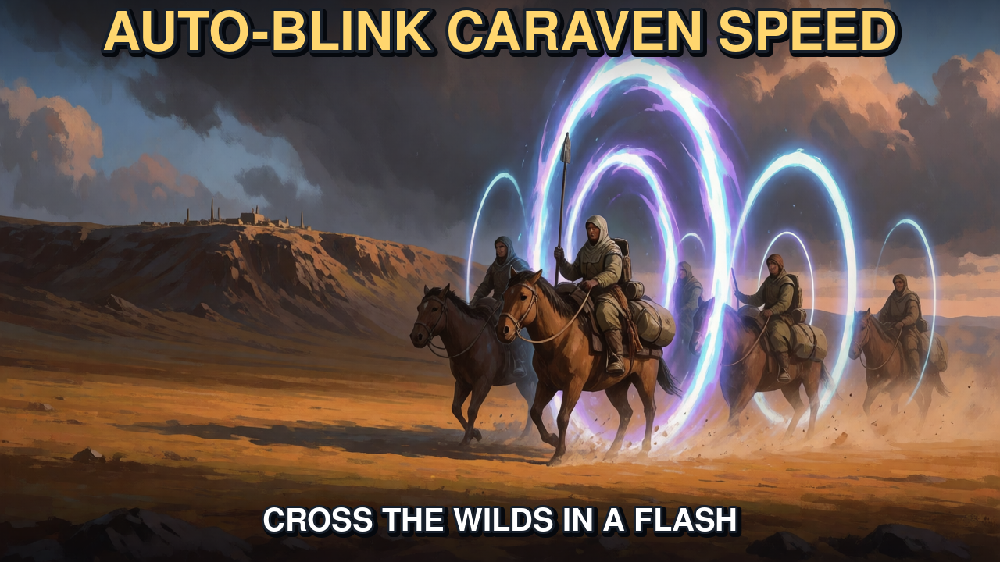

Auto-Blink Caraven Speed

Experimental candidate — not verified in game. Eligible caravans use 0.001× the normal travel ticks, rounded and clamped to at least one tick. All walking members, including animals, need an active profile-bearing AutoBlink source. Requires RimWorld 1.7, Harmony, and AutoBlink.